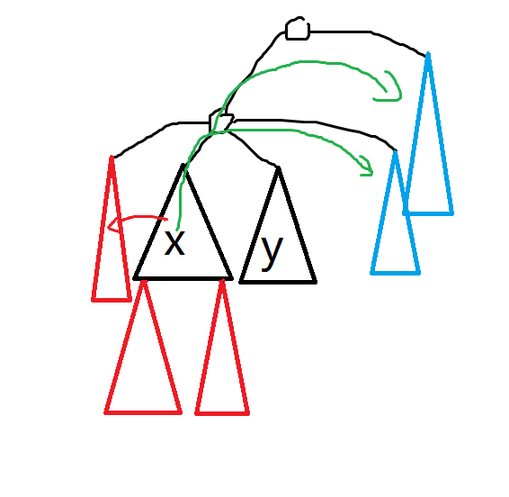
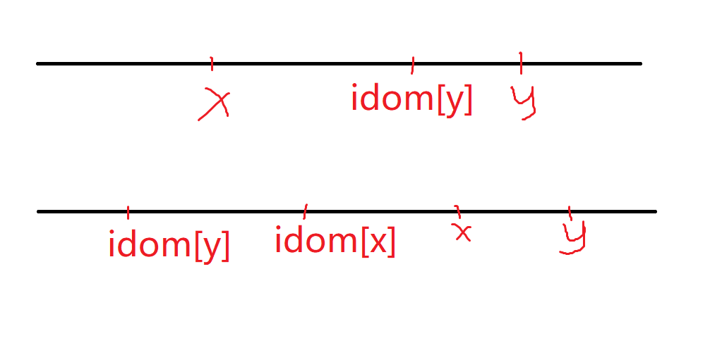
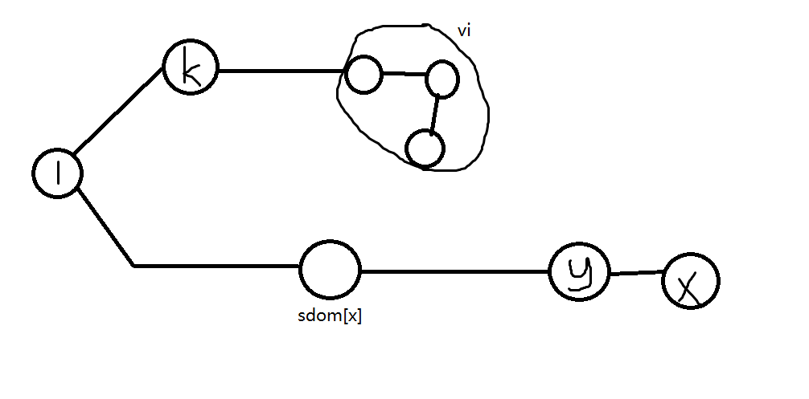
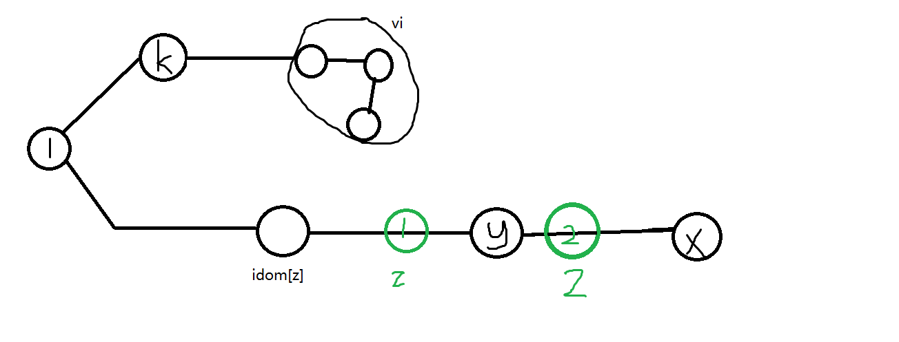

支配树学习笔记
前言
一个非常毒瘤的事情，2021联合省选竟然考了支配树，甚至名字还叫支配？？？
当然，其实那道题目不用支配也能做，但是我太菜了，不会，然后就弃掉了。
现在学了一下支配树，来写个模板。
注：支配树证明部分基本沿用了王梦迪大佬PPT的证明，因此如果是寻求另类解释的OIer可以撤了。（曾经我也想看完做法后好好理解看看自己能不能领悟证明，事实证明我错了，自己思考除了浪费时间貌似一点作用都没有，菜就是菜QAQ）
支配树简介
在一个有向图上，保证 $1$ 号点能到达所有的点，如果 $1$ 到达 $x$ 的所有路径都要经过点 $y$ ，则称 $y$ 支配 $x$ ，当然，特殊的，$1$ 和点 $x$ 本身都支配点 $x$ 。
当然，有时候不一定 $1$ 号点能到达所有的点，你就把到不了的点剔除在外就行了。
仔细想想支配有什么性质？
其实画个图不难发现支配是呈现树状结构的，此话怎讲？
例如 $x,y$ 都支配 $k$ ，你认为 $x,y$ 能是什么关系？
如果 $x,y$ 互相并不支配，那么想想看，假设存在一条路径是从 $1->x->y->k$ 的，那么因为 $x$ 并不支配 $y$ ，那么只要在另找一条不包括 $x$ 到 $y$ 的路径代替就可以变成：$1->y->k$ 了，这与 $x$ 支配 $k$ 矛盾，因此 $x,y$ 之间一定有支配关系。
另外，$x,y$ 之间也不能互相支配，假设 $x,y$ 互相支配，则到 $y$ 的一条简单路径为：$1->x->y$ ，但是 $y$ 支配 $x$ ，所以为：$1->y->x->y$，与简单路径矛盾，所以 $x,y$ 最多只能是单向支配关系（所以支配关系是一个 $DAG$ 图，当然，自己支配自己不考虑在这个图内）。
还有一条性质：如果 $x$ 支配 $y$ ，那么支配 $x$ 的点也支配 $y$ 。
继续仔细观察，不难发现，对于一个点 $x$ ，如果假设支配他的点的集合为 $V$ ，将 $V$ 中的 $x$ 踢出去，那么 $V$ 中一定有个点 $y$ 能被 $V$ 中所有点支配，我们称 $y$ 是 $x$ 的支配点（因此 $k$ 支配 $x$ 不一定代表 $k$ 是 $x$ 的支配点）。
当然，除 $1$ 以外的点都有支配点，至于为什么，可以发现，支配关系一定是一个 $DAG$ 图，然后如果我们讨论踢到 $x$ 的 $V$ 的导出子图，就会发现，这个点数为 $t$ 的导出子图每个点的度数都是 $t-1$ ，且样子是固定的，每个点的入度和出度都从 $0$ 到 $t-1$ 完完整整的来了一遍（这个用数学归纳法很好证），那个入度为 $t-1$ 出度为 $0$ 的点就是支配点。（当然，深入一点，这个子图上每个点的入度加一其实就表示了在支配树上的深度，这一点目前无关紧要。）
举个栗子：
$1->3->2->5$
这一条链中 $1,3,2$ 都能支配 $2$ ，看 $1,3$ ，发现只有 $3$ 是被 $1,3$ 支配，所以 $3$ 是 $2$ 的支配点。
然后我们让每个点 $x$ （除 $1$ 以外）的支配点连向 $x$ ，便可以得到一个新的树，这个树就叫支配树。（至于为什么是树嘛，$n-1$ 条边，且没有环，不就是树吗？而且还是个以 $1$ 为根的外向树，除 $1$ 外每个点的入度都是 $1$ ）
在这节最后总结一下：
$x,y$ 不能互相支配，如果他们支配同一个点，他们之间存在支配关系，同时，支配关系具有传递性。
支配树的概念基本就讲完了，其实支配树就是支配关系DAG图中的一个生成树罢了。
接下来会介绍一种做法： Lengauer Tarjan算法。名字上的两个人就是发明者。
时间复杂度：$O((n+m)α(n))$，空间复杂度：$O(n+m)$。
当然，你乐意的话其实可以把 $α(n)$ 换成 $log$ 的，反正我是这样干的。
支配树的构造方法
P5180 [模板]支配树 - 洛谷 | 计算机科学教育新生态 (luogu.com.cn)
先来分析一下这道题目和支配树有什么关系，来一条性质：
$x$ 如果支配 $y$ ，那么 $x$ 在支配树上一定是 $y$ 的祖先。
证明：
设支配 $y$ 的点集为 $V$ ，$k$ 是 $y$ 的支配点，因为支配具有传递性，所以支配 $k$ 的点集是 $V$ 的一个子集，且大小只相差 $1$ ，这样不断下去，就会发现，其实点集呈现一条链状，所以 $x$ 是 $y$ 的祖先，其实这条链中每个点的深度上面也提到了，就是 $V$ 导出子图中每个点的入度加一。
因此，实际上一个点所支配的点就是其子树（同理，支配一个点的点就是其到根节点的这一条链），因此这道题目实际就是问每个点在支配树上的子树大小。
接下来会提到暴力和特殊情况，如果要看做法直接跳到正确做法即可。
暴力构造法
这个方法的时间复杂度是 $O(n^2)$ ，但这次省选D2T3应该这个复杂度就够了。
没什么实际作用，但是应该能提升一点点理解吧。
设置 $idom$ 表示一个点的支配点编号。
简单来说，去掉一个点 $t$ ，然后跑 $BFS$ ，然后便会有一些点会到不了，记作点集 $V$ ，对于点 $x∈V$，首先 $t$ 支配 $x$ ，如果 $idom[x]$ 为 $0$ ，那么 $t$ 可能是 $x$ 的支配点，或者 $idom[x]∉V$ ，说明 $idom[x]$ 支配 $t$ ，所以 $t$ 可能是 $x$ 的支配点。
但是，如果 $idom[x]∈V$ ，那 $t$ 便不可能是 $x$ 的点集。
然后依次去掉每个点，便可以完成此暴力，时间复杂度 $O(n^2)$ ，空间复杂度：$O(n)$ 。
1 |
|
DAG特殊情况
[P2597 ZJOI2012]灾难 - 洛谷 | 计算机科学教育新生态 (luogu.com.cn)
来看种特殊情况，即原图没有环的情况，也是算加深理解顺便做道题目吧。
首先将其和支配扯上关系：将被捕者向捕食者连边，如果从所有生产者出发到这个点 $x$ 都要经过一个点 $y$ ，那么 $y$ 支配 $x$ ，为了方便，我们加入一个超级源点，向所以入度为 $0$ 的点连边，这样就重新变成了我们原本所定义的支配关系了。
该怎么做呢？实际上非常的简单但我不会，做法就是拓扑排序+倍增，在边跑拓扑排序的时候（这里我们将入度为 $0$ 作为入队要求），当一个点入度变为 $0$ 加入队列时，便更新其倍增数组，倍增数组维护的是其在分配树上的祖先，而一个点在分配树上的祖先就是连向他的在支配树上的 $LCA$ 。
举个例子：如果 $1,2,3$ 都连向 $4$ ，那么 $4$ 的支配点就是 $1,2,3$ 在支配树上的 $LCA$ 。
比较简单，不证明了。
然后就做完了。
时间复杂度：$O(n\log{n})$，空间复杂度：$O(n\log{n})$ 。
1 | //建反图，求支配树，然后求出每个点在支配树上的子树大小 |
正确做法
DFS树
首先，我们跑个 $DFS$ ，可以得到 $DFS$ 序 $dfn$ 数组。（记录 $DFS$ 中的访问时间）
同时我们可以得到一个 $DFS$ 树。（下文中的父亲，祖先关系都是在 $DFS$ 树上，与半支配树以及支配树无关）
符号定义
下文中 $DFS$ 树用 $T$ 代替，$DFS$ 树中的边用 $E$ 表示，原图中的边用 $E’$ ，为了方便，下文点的编号全部用 $dfn$ 重新编号。
$x->y$ 表示 $x->y$ 的路径，包括左右两个点。
$(x->y)$ 表示 $x->y$ 在 $T$ 中的路径，不包括左右两个点，$[x->y]$ 表示 $x->y$ 在 $T$ 中的路径，包括左右两个点（类似开闭区间）。
$x+->y$ 表示 $x$ 在 $T$ 中是 $y$ 的祖先，且 $x≠y$ 。
$x.->y$ 表示 $x$ 在 $T$ 中是 $y$ 的祖先，但可能 $x=y$ 。
讨论性质
如果 $x$ 支配 $y$ ，那么 $x$ 在 $T$ 上一定是 $y$ 的祖先，这个非常简单，因为树上 $1$ 到 $x$ 这条链上的点才有资格去支配 $x$ 。
定义：如果一条边是 $x->y$ ，且 $x,y$ 在树上的 $LCA$ 不是 $x,y$ ，则称这条边为横叉边，可以发现 $x>y$ ，证明：如果$x
路径引理：如果 $x<y$ ，那么 $x$ 到 $y$ 的每条路径都包括一个他们的公共祖先（不一定是 $LCA$ ，不同路径也不一定是同一个）。
证明：先明白一个事情，一个点的两个儿子子树，根据 $T$ 的定义，肯定是一个儿子子树的点的编号普遍大于另外一个儿子子树的点，因此如果对于 $k$ ，$x,y$ 位于其两个不同的儿子子树，$x<y$，你在 $x$ 所在的儿子子树是找不到一个点的编号大于 $y$ 的，因此，我们可以根据这个勉强的认为一个点的不同儿子子树间存在大小。

回归我们要证的题目，红色三角形表示整体小于 $y$ 的子树（其实 $x$ 所在的那个三角形也应该是红色），蓝色则是整体大于 $y$ 的，可以发现，$x$ 不管走横叉边还是儿子边，最终都只能到达另外一个红色三角形，只有走返祖边，到达 $x,y$ 的其中一个公共祖先，才可以到达蓝色三角形。
如果 $x+->y$ ，则 $x.->idom[y]$ 或 $idom[y].->idom[x]$ 。
换言之，$idom[y]$ 不可能卡在 $idom[x],x$ 中间。
为什么？如果 $idom[y]$ 卡在中间，那么存在一条路径不经过 $idon[y]$ 直接到 $x$ 然后再到 $y$ 即可，矛盾。
半支配点
半支配点是什么？
如果 $x$ 是满足存在一条 $x$ 到 $y$ 的路径使得除 $x,y$ 以外的点编号都大于 $y$ 且编号最小的点，那么就称 $x$ 是 $y$ 的半支配点。（默认 $1$ 没有半支配点）
不难发现，$x$ 的父亲有可能成为 $x$ 的半支配点，我们认为，$sdom[x]$ 为 $x$ 的半支配点。
性质：
$x$ 的半支配点一定是 $x$ 的祖先。
证明：假设 $y$ 不是 $x$ 的祖先，那么假想一下 $y$ 那条满足要求的路径吧，假设路径第一条边到 $t$ ，且是横叉边，则$y>t>x$，那还不如 $x$ 不如让 $x$ 的父亲当半支配点， $dfn$ 更小。
如果不是横叉边，而是指向 $y$ 子树的边，那么同理证否，如果指向的是 $y$ 的祖先，那么让 $y$ 的祖先当这个半支配点更好，证毕。
EX： 因此，如果我们认为将 $sdom[x]$ 连向 $x$ 能构造成一棵树，这棵树叫半支配树。
$x$ 的半支配点 $y$ 在 $x$ 到支配点 $k$ 的路径上（包括两端）。
证明一下：首先，不难发现， $k$ 到根节点的点（不包括 $k$ ）由于到 $x$ 都要经过 $k$ ，所以不可能满足要求，则半支配点一定在 $x$ 到支配点 $k$ 的路径上，当然，也不一定 $y=k$ ，可以举个反例：
比如：$1->2->3->4->5$，如果还存在边：$1->3->5,2->4$，那么 $1$ 是 $5$ 支配点，但是 $4$ 是 $5$ 的半支配点。
如果不存在 $z∈(sdom[x]->x)$ 使得 $sdom[z]<sdom[x]$，$sdom[x]=idom[x]$ 。
证明：只要证明 $sdom[x]$ 支配 $x$ 即可，我们假设 $k∈1->x$ ，且满足是最后一个编号小于 $x$ 的点（肯定有，如果没有，则 $sdom[x]=1$ ，同样结论成立），$y$ 是 $k$ 之后第一个属于 $[sdom[x]->x]$ 的点，设 $v_{i}$ 是路径上介于 $k,y$ 之间的点，现在证明 $v_{i}>y$ 。

如果 $sdom[x]
那么，则 $k≥sdom[y]$ （ $k$ 满足 $sdom[y]$ 的要求），则 $sdom[y]≤k<sdom[x]$ ，因此，$y$ 只能是 $sdom[x]$ 了， $sdom[x]$ 支配 $x$ ，证毕。
如果存在 $sdom$ 最小的 $z∈(sdom[x]->x)$ 使得 $dfn[sdom[z]]<dfn[sdom[x]]$，$idom[z]=idom[x]$ 。
证明：运用 DFS 性质 $4$ ，我们可以发现 $sdom[x]>z>x$ ，那么就不可能是情况一了，只能是第二种情况，这样我们只需要证明 $idom[x]$ 支配 $y$ 即可。（即：$idom[x].->idom[z]->z->x$）

类似的，我们设一个 $k$ ，表示 $1->y$ 路径上最后一个 $dfn$ 小于 $idom[z]$ 的点设为 $k$ ，同时第一个属于 $[idom[z]->y]$ 的点设 $y$ ，那么类似的可以证明 $sdom[y]
将半支配树和支配树合在一起构成一个新图，新图和原图的支配关系不变。
证明：实际只要求每个点的支配点不变就行，根据性质 $4,5$ ，可以发现新图上每个点的支配点其实是不变的。
EX：因此，根据这条性质，如果我们求出了半支配点，就可以直接将 $T$ 和半支配树合在一起用 DAG 求法达到比较完美的 $O(n\log{n}+求半匹配点时间)$ 。
$sdom[x]=min(\{y|(y,x)∈E’,y
证明：我们设 $g$ 等于等号右边。
$sdom[x]≤g$
对于第一种情况， $y$ 显然满足半支配点的要求，可以作为考虑对象。
对于第二种情况，显然，存在一条路径 $sdom[z]->z$ 且使得路径中间的点都大于 $z$ （ $sdom[z]$ 定义），将 $z.->y->x$ 加上，显然整条路径的的中间也都大于 $x$ ，因此，$sdom[z]$ 也可以是 $x$ 的半支配点。
$sdom[x]≥g$
我们假设存在一条路径 $sdom[x]->v_1->v_2->v_i->v_k->x$ 那么如果 $k=0$ ，则 $sdom[x]$ 将在第一种情况被判断到（注意 $sdom[x]
显然，$v_{j}>v_{i}(1≤j<i)$ ，因为如果小于，则一定经过 $v_{i}$ 的祖先，那么违反定义，则 $g≤sdom[v_{i}]≤sdom[x]$ 。
综上，$g=sdom[x]$。
根据性质 $6$ 不难发现，该式子只要右边的 $sdom$ 都是正确的，则一定可以保证左边的正确，因此，我们只需要按编号从大往小扫，只要保证编号最大的 $sdom$ 正确（显然，此时只有第一类），就可以类似数学归纳的思路保证所有的 $sdom$ 都是正确的。
但是具体做法是什么呢？
右式第一类比较好讨论，但是第二类呢？不难发现，其实 $z.->y$ 对应在树上就是一条链，因此，我们可以利用带权并查集的思路，维护一个点到目前最晚遍历到的祖先这么一条链上最小的 $sdom$ 即可。
最后只要依次从大到小遍历，然后在反图遍历 $x$ 的边即可。
1 | int dfn[N],id[N],top; |
需要注意的是，$mn$ 维护的并不是链上最小的 $sdom$ ，而是持有最小 $sdom$ 的点（相同则 $dfn$ 大的优先）。（为后面更高效的做法作准备）
同时，虽然链的顶部 $x$ 是没有被访问的点，但是无伤大雅，因为 $sdom[x]=x$ ，而其儿子的 $sdom$ 肯定是 $x$ 或者 $x$ 祖先，所以 $x$ 后代的 $mn$ 不会等于自己，无伤大雅。
接下来只要跑个 $DAG$ 就完事了。
但是，神犇并不满足于此。
更加高效的做法
其实性质 $3,4$ 点便是根据 $sdom$ 求 $idom$ 的方法。
但是这个具体应该怎么搞呢？
难道我们真的要傻傻的枚举 $x->sdom[x]$ 路径上的点？（其实貌似用倍增依旧是一个log）
当然不用，其实我们不需要从 $x$ 出发考虑，我们可以从 $sdom[x]$ 出发考虑，当我们遍历到 $sdom[x]$ 的一个儿子 $y$ 的时候（ $x$ 在 $y$ 子树内），由于 $DFS$ 树的定义，$y$ 的子树肯定也都被遍历过了，也就是说， $[x->y]$ 这一条链实际上都已经被遍历过了，则并查集中 $x$ 的 $mn[x]$ 实际可能就是 $[x->y]$ 中我们要找的 $z$ （为什么是可能，因为可能没有 $z$ ，如果有，那么就是我们要的 $z$ ），因此，只要我们遍历完 $x$ ，我们就遍历 $x$ 的父亲在半支配树上的儿子来判断，但是需要注意的是，因为接下来会遍历 $x$ 父亲的其余儿子子树，为了防止在其余儿子子树重复判断 $x$ 子树的点，因此在 $x$ 遍历完后，要把 $x$ 父亲在半支配树上的儿子全部删掉。（当然，不删掉不会导致错误，但时间会假）
如果我们发现，不存在 $z$ ，那么 $idom[x]=sdom[x]$ ，但是如果存在 $z$ ，$idom[x]=idom[z]$ ，$idom[z]$ 此时一定还没找到，怎么办？其实可以先用 $idom[x]=z$ ，最后正序扫描一遍赋值即可。
1 | void work() |
完整的代码
1 |
|
不难发现，此做法时间复杂度 $O((n+m)\log{n})$ ，空间复杂度：$O(n+m)$ ，比起 $DAG$ 做法，空间少个 $\log$ ，常数还比较小（但复杂度一样），因此，在洛谷上高效做法比 $DAG$ 做法整整快了 $3s$ （高效采用我的代码，$DAG$ 采用 XZY 的代码），当然，可以把并查集改成 $α(n)$ 的，这样时间复杂度就变成 $O((n+m)α(n))$ 。
小结
Lengauer 和 Tarjan 太强啦。
参考资料
王梦迪 支配树PPT